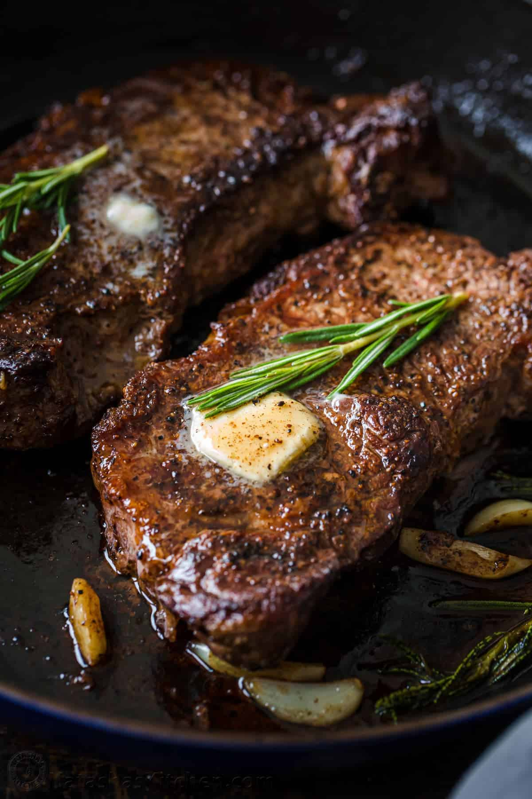
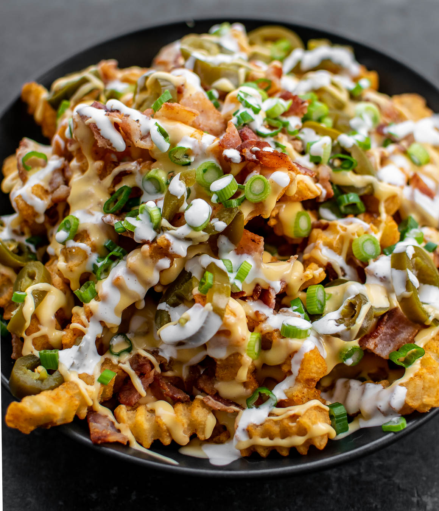
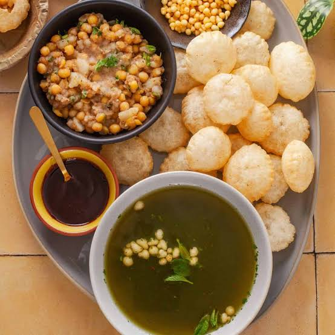
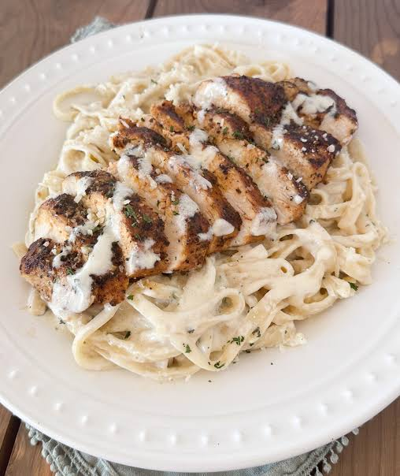

Food recipe Card:-

.jpg)
.jpg)




Zinger Burger :-

Chicken Marinade Ingredients :-
2 cups buttermilk
2 tablespoons hot sauce of your choice (our favorite is Frank’s Red Hot)
1 tablespoon garlic powder
1 teaspoon ground paprika
1 teaspoon salt
½ teaspoon ground black pepper
1 cup all-purpose flour
Ingredients for Seasoned Flour Mixture to Bread Chicken :-
If desired of course. (Make sure to see the sauce recipe below too if that’s something you’d love to top this with!)
4 large hamburger buns (brioche buns are our FAVE!)
4 slices cheddar cheese
2 large ripe tomatoes, sliced
½ head iceberg lettuce, washed
8 pickle slices
Chicken Biryani :-

Chicken Biryani Ingredients:-
1.5 lbs bone-in chicken pieces
2 cups aged basmati rice, soaked 30 min
1 cup plain yogurt
3 large onions, thinly sliced
1 tbsp ginger-garlic paste
1 tsp biryani masala
1/2 tsp turmeric
1 tsp red chili powder
Pinch saffron soaked in 3 tbsp warm milk
4 green cardamom pods
3 whole cloves
2 bay leaves
1 cinnamon stick
1/4 cup fresh mint leaves
1/4 cup fresh cilantro, chopped
3 tbsp ghee
Salt to taste
Chicken Biryani Making:-
Marinate chicken with yogurt, ginger-garlic paste, biryani masala, turmeric, chili powder, and salt. Refrigerate for at least 1 hour (overnight is best).
Deep-fry or slowly caramelize the sliced onions in ghee until dark golden and crispy. Remove half and set aside for garnish.
In a large heavy pot, spread the marinated chicken evenly on the bottom with the remaining fried onions.
Parboil the soaked rice in salted water with cardamom, cloves, bay leaves, and cinnamon until 70% cooked (rice should still have a bite). Drain.
Layer the par-cooked rice over the chicken. Drizzle saffron milk in lines across the top. Scatter mint, cilantro, and reserved fried onions.
Dot with ghee. Seal the pot tightly with aluminum foil, then press the lid on top. Cook on the lowest heat for 25-30 minutes.
Remove from heat and let it rest sealed for 10 minutes. Gently fold layers together when serving. Accompany with cucumber raita.
Chicken Pizza :-
Chicken pizza Ingredients :-
• Pizza dough – 1 standard store-bought or homemade ball
• Pizza sauce – ½ cup tomato sauce or passata
• Mozzarella – 1.5 to 2 cups, shredded
• Pepperoni – 20 to 30 slices
• Seasonings – Dried oregano, red pepper flakes, and olive oil
Chicken pizza Making:-
1. Preheat the oven: Set your oven to its highest temperature, usually 230°C to 260°C (450°F to 500°F). If you have a pizza stone, place it inside now.
2. Shape the dough: Roll or stretch your pizza dough out on a floured surface into a 12-inch circle, then transfer it onto a baking sheet or pizza peel.
3. Add the sauce: Spread ½ cup of pizza sauce evenly over the dough, leaving a small border around the edges for the crust.
4. Layer the toppings: Sprinkle 1.5 to 2 cups of shredded mozzarella over the sauce, then arrange your pepperoni slices evenly across the top.
5. Bake the pizza: Slide the pizza into the preheated oven. Bake for 10 to 15 minutes until the crust is golden-brown and the cheese is bubbly and lightly browned.
6. Finish and serve: Brush a little olive oil onto the crust, sprinkle with oregano or red pepper flakes, slice, and serve hot.
Beaf Steak :-
Beaf Steak Ingredients :-
• Beef Cut: 200–500g per person (ribeye, sirloin, tenderloin, or T-bone)
• Salt: ½ to 1 tsp (or to taste)
• Black Pepper: 1 tsp freshly cracked or ground black pepper
• Oil or Fat: 2 tbsp olive oil or butter for searing
Beaf Steak Making:-
To make a perfect beef steak, bring the meat to room temperature and pat it completely dry before seasoning generously with salt and pepper. Sear the steak in a ripping-hot cast-iron skillet with high-heat oil for 2–3 minutes without moving it, then flip. Lower the heat and add butter, smashed garlic, and fresh herbs to the pan, continuously spooning the melted butter over the steak to baste it. Once it reaches your desired doneness, transfer the steak to a cutting board and let it rest for 5–10 minutes so the juices lock in before slicing against the grain.
Chicken Momos:-
Chicken Momos Ingredients :-
Dough Ingredients
• All-purpose flour (maida): 1 to 2 cups
• Salt: ½ teaspoon
• Oil or melted butter: ½ to 1 tablespoon
• Water: As needed (warm or lukewarm) to knead a firm yet smooth dough
Chicken Momos Making:-
The fastest way to make momos is to skip making dough by using store-bought wonton or gyoza wrappers and combining them with a quick, no-cook filling of finely shredded veggies or chicken mince mixed with soy sauce, ginger-garlic paste, and black pepper. Instead of spending time on intricate pleating, you simply place a teaspoon of filling in the center, wet the edges, and fold the wrapper in half like a taco, pressing tightly to seal. Finally, cook them using the pan-fry and steam method by placing them in a hot, oiled skillet for two minutes until the bottoms are golden, pouring in a quarter-cup of water, and immediately trapping the steam with a tight lid for five minutes until the water evaporates and the wrappers turn translucent.
Alfredo Pasta:-

Alfredo Ingredients :-
• Pasta: Fettuccine (preferably fresh)
• Butter: Unsalted butter (generous amount)
• Cheese: Freshly grated Parmigiano-Reggiano cheese
• Liquid: Starchy pasta cooking water
• Seasoning: A pinch of salt (optional or built into the pasta water)
Alfredo Pasta Making:-
Boil 8 to 12 oz of fettuccine pasta in salted water until al dente, reserving 1/2 cup of pasta water before draining. Meanwhile, melt 1/2 cup of unsalted butter in a skillet over medium-low heat and sauté 2 to 4 minced garlic cloves for 30 seconds until fragrant. Pour in 1 cup of heavy cream, simmer gently for 2 minutes, then reduce heat to low and whisk in 1 to 1.5 cups of freshly grated Parmesan cheese until smooth. Season with salt and black pepper, toss the drained pasta directly into the sauce until fully coated, and splash in a bit of the reserved pasta water if needed to reach a silky consistency before serving.
Loded Fries :-
Loded Fries Ingredients :-
• French fries
• Cheddar cheese
• Bacon
• Green onions
• Sour cream
• Jalapeños
• Ground beef
• Pulled pork
• Mozzarella cheese
• Ranch dressing
• Barbecue sauce
• Tomatoes
• Red onion
• Cilantro
Alfredo Pasta Making:-
To make loaded fries quickly, fry or bake a batch of frozen french fries until extra crispy, then layer them on a platter and top with cooked, seasoned chicken or minced beef. Pour a smooth, warm cheddar cheese sauce generously over the meat and fries, then finish with a drizzle of mayonnaise, sliced jalapeños, and a sprinkle of chopped green onions before serving hot.
Pani Pori:-
Pani Pori Ingredients :-
• Semolina (sooji) and all-purpose flour (maida) or whole wheat flour
• Baking soda
• Water (for kneading a stiff dough)
• Oil (for deep-frying)
• The Filling (Aloo / Masala)
Pani Pori Making:-
To make them, knead a stiff dough from semolina, a little flour, salt, and warm water, let it rest for 30 minutes, then roll it thin and cut into small circles. Deep-fry these discs in hot oil until they puff up into golden, crunchy spheres.
For the filling, mix boiled mashed potatoes and chickpeas with chaat masala, cumin, chili powder, and fresh coriander. For the signature pani, blend fresh mint, coriander, green chilies, ginger, and tamarind into a paste, mix it into chilled water, and season with black salt. To serve, poke a hole in a puri, stuff it with the filling, ladle in the cold water, and enjoy it in one bite.